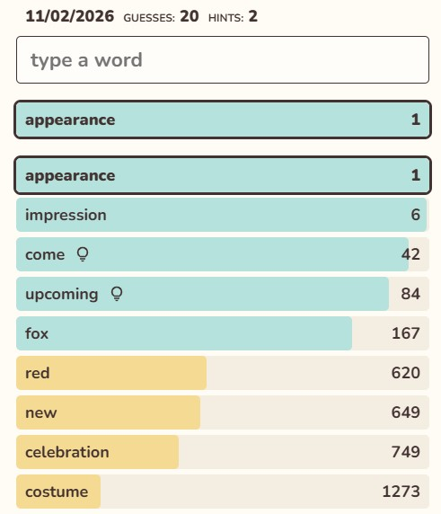
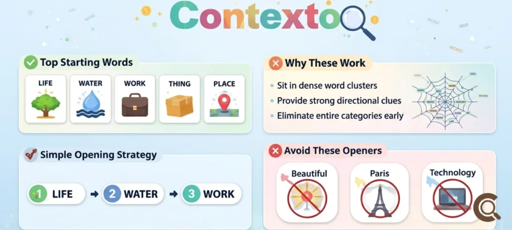

Contexto – algorytmy przetwarzania języka w służbie rozrywki
Ostatnią pozycją w moim zestawieniu jest przeglądarkowa gra logiczno-słowna Contexto. W przeciwieństwie do opisanych wcześniej narzędzi wspierających naukę, z tej witryny korzystam przede wszystkim dla rozrywki, ale też szybkiego treningu umysłu. Zadaniem gracza jest odgadnięcie sekretnego słowa dnia przy nieograniczonej liczbie prób. Podpowiedzią jest miejsce wpisanego wyrazu w rankingu: sekretne hasło ma numer 1, a im mniejsza liczba pojawia się przy naszej propozycji, tym bliżej rozwiązania się znajdujemy.
Gra ta nie mogłaby jednak powstać bez zaawansowanej sztucznej inteligencji. Nie ocenia ona bowiem podobieństwa literowego wyrazów, lecz ich bliskość semantyczną i kontekstową. Mechanika opiera się na algorytmach przetwarzania języka naturalnego (NLP) oraz tzw. zanurzeniach słów (word embeddings). Każde słowo jest reprezentowane przez model jako wektor w wielowymiarowej przestrzeni matematycznej, a odległość między nimi wynika z tego, jak często dane pojęcia współwystępują w podobnym kontekście w ogromnych zbiorach tekstów. Dzięki temu prosta gra stanowi świetną wizualizację tego, jak współczesne modele językowe „rozumieją” i kategoryzują świat.


Mechanika gry i wskazówki praktyczne
1. Wizualizacja działania modeli językowych w praktyce
Choć po Contexto sięgam głównie dla zabawy, rozgrywka pozwala bardzo intuicyjnie zauważyć różnicę między synonimem słownikowym a współwystępowaniem słów w tekście. Przykładowo, słowo szkoła może znajdować się w przestrzeni wektorowej znacznie bliżej słów dzwonek lub tablica niż formalnego synonimu placówka. Obserwowanie tych zależności pozwala lepiej zrozumieć mechanizmy stojące za dużymi modelami językowymi (LLM).
2. Odskocznia i krótki trening analityczny
Gra doskonale sprawdza się jako kilkuminutowa przerwa podczas intensywnej nauki. Wymusza nieszablonowe myślenie i szukanie nieoczywistych skojarzeń, stanowiąc angażującą rozgrzewkę umysłową bez konieczności długiego skupienia.
3. Porada: Strategia zawężania przestrzeni poszukiwań
Aby efektywnie odgadywać hasła i nie błądzić po omacku, warto podejść do gry w sposób przypominający algorytmiczne przeszukiwanie przestrzeni. Dobrą praktyką jest rozpoczynanie każdej rozgrywki od stałego zestawu kilku słów reprezentujących skrajnie różne dziedziny (np. człowiek, życie, praca, przyroda, miejsce). Pozwala to już w pierwszych ruchach zlokalizować właściwą kategorię tematyczną, w której znajduje się hasło dnia.
4. Porada: Wychodzenie z tzw. „lokalnego minimum”
Częstą pułapką w grze jest utknięcie w wąskiej grupie słów na wysokich, zielonych pozycjach (np. w przedziale 20–100) poprzez wpisywanie kolejnych wyrazów tej samej kategorii, takich jak nazwy kolorów czy gatunki zwierząt. Gdy kolejne synonimy nie przybliżają do numeru 1, warto zmienić część mowy lub pomyśleć o szerszym otoczeniu danego obiektu – np. zamiast wymieniać kolejne instrumenty muzyczne, wpisać słowa określające ich wykorzystanie, takie jak koncert, scena czy orkiestra.
Podsumowanie
Contexto to doskonały dowód na to, że zaawansowane rozwiązania z zakresu sztucznej inteligencji i wektoryzacji tekstu mogą być z powodzeniem wykorzystywane w prostej, angażującej rozrywce. Stanowi dla mnie przyjemne urozmaicenie dnia, które przy okazji w niezwykle obrazowy sposób przybliża teoretyczne podstawy działania współczesnych modeli językowych.